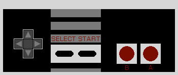

Crosser puts you, the player, in a position to help Carlos Moreno cross the Rio Grande and seek a better life.
Avoid getting hit by floating debris, you will have to start over. Avoid getting caught by la migra, you will be sent back. Sometimes la migra won't look, be quick. Get to the green card on the other side to pursue the American dream.
with a keyboard: The G key will call up the SELECT window. Pressing G again will toggle between Crosser and La Migra and their icons will be highlighted to the right. The H key will call up the highlighted game. Pressing H again will START the game.
Use the W, A, S, D, or I, J, K, L, keys to move your character, Carlos Moreno, up toward the green visa at the top of the screen. Avoid contact with everything else or you will get sent back.
with an NES-style gamepad: use the cross-shaped D-pad to move your character, Carlos Moreno, up, down, left, or right, toward the green visa at the top of the screen. Avoid contact with everything else or get sent back to try again.
